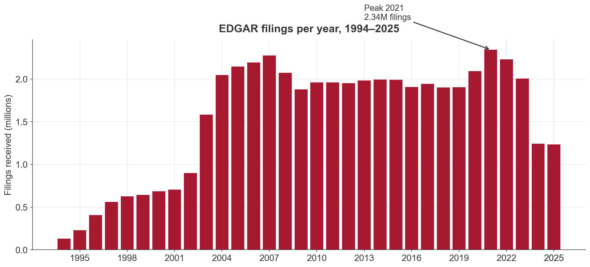
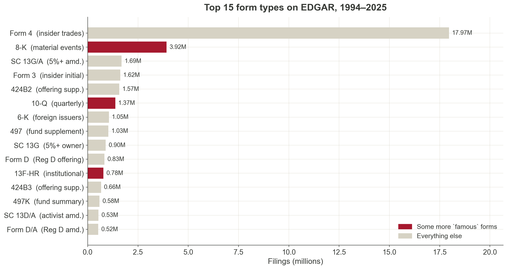
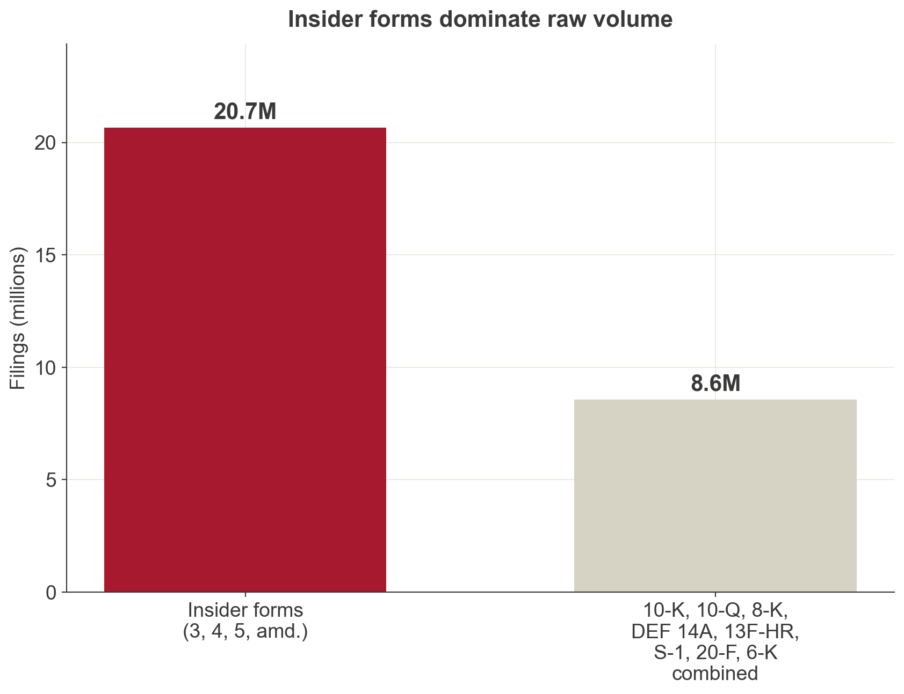
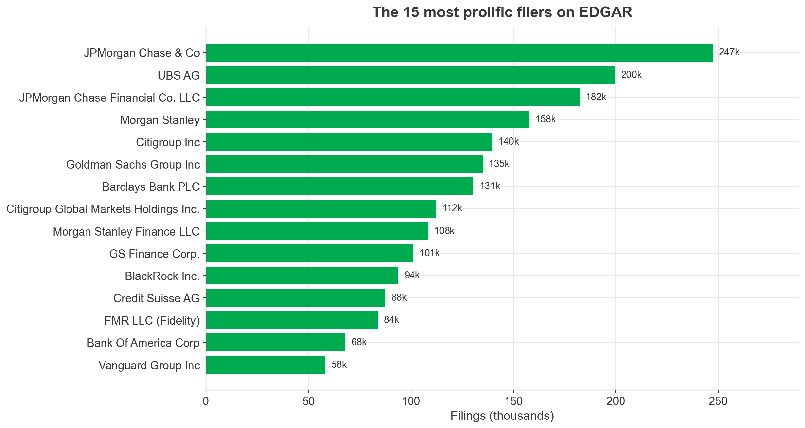
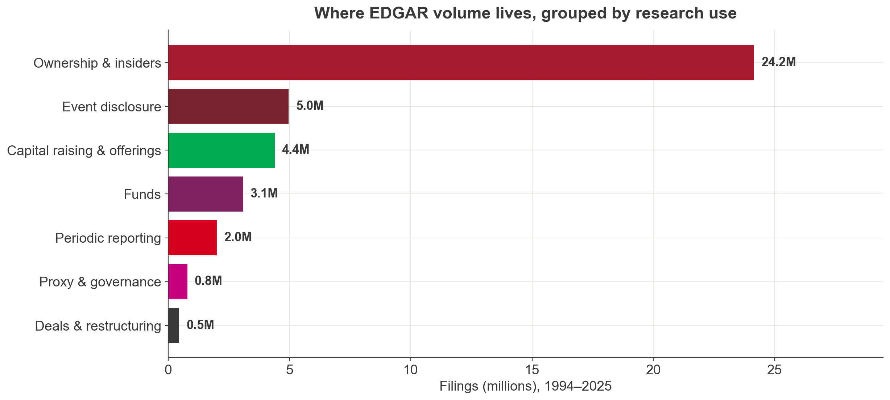
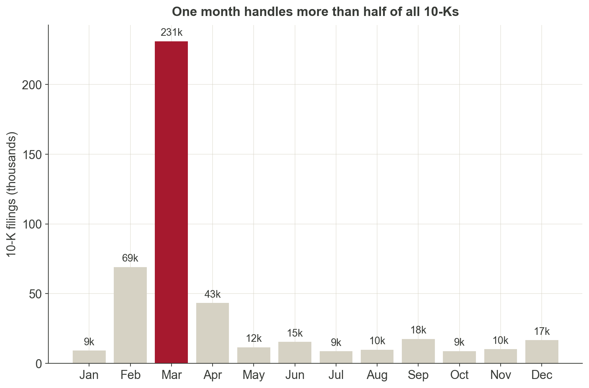
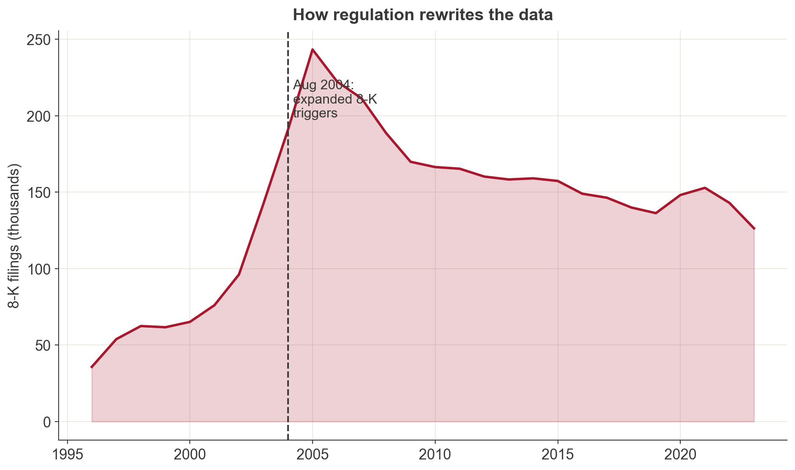
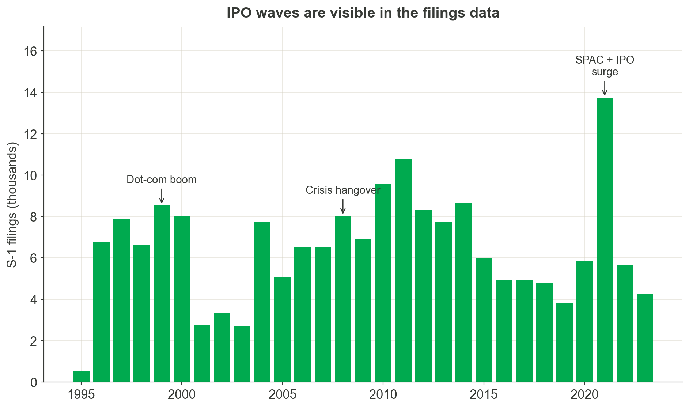

Information Extraction via (Seek)Edgar
Department of Applied Finance; Macquarie University FinTech and Banking Research Centre
2026-04-23
A single filing is at once a legal document, a financial report, a strategy narrative, and a text corpus. It speaks to every field.
Accounting & Governance
Footnotes, estimates, proxy disclosures, board structure, SOX 404, CD&A.
Actuarial & Analytics
XBRL facts, risk disclosures, insurance and fund filings, text-based analytics.
Applied Finance
Capital raising, contracts, ownership, event studies, insider trading, M&A.
Economics
Regulation as natural experiment, rule changes, industry dynamics, political economy.
Management
Strategy narratives, restructuring, leadership turnover, executive incentives.
Marketing
Customer concentration, product risk, brand incidents, consumer-facing language.

49.7M+
filings, 1994–2025
~2M / year
since 2004
~8,000 / day
new filings on a typical business day
Regulation leaves fingerprints. The 2003–2004 step-up reflects expanded 8-K triggers and ownership-reporting rules.

Form 4 is a one-page filing that an officer, director, or 10% shareholder submits within two business days of trading their company’s shares.
Research idea
Do insiders sell systematically before negative news? Do director purchases signal board confidence? Form 4 gives you the raw material.


Not Apple. Not Tesla. The most prolific filers are investment banks, asset managers, and their structured-product issuing vehicles submitting thousands of offering supplements and ownership reports. The “firm” in your data is not always the “firm” in your theory.
Breadth
One archive covers listings, ownership, governance, material events, capital raising, deals, and contracts.
Longitudinal depth
Many firms have decades of filings, enabling within-firm designs.
Granularity
Items, sections, tables, XBRL tags, exhibits, signatures. Each layer supports a different empirical question.
Accountability
Disclosures are legally consequential. This is why they are often more careful, more consistent, and more comparable than press releases or pitch decks.
Filings are imperfect, strategic, and sometimes boilerplate. But those features can themselves become research objects.
EDGAR: Electronic Data Gathering, Analysis, and Retrieval.
Stop thinking in form codes. Think in research use.
Periodic reporting
Event disclosure
Ownership and trading
Governance and shareholder process
Capital raising and listing
Deals and restructuring
Exhibits

The recurring narrative of the firm.
10-K (annual):
10-Q (quarterly):
Things researchers have measured from 10-K / 10-Q:

Most U.S. firms have a December fiscal year-end. Large filers must submit their 10-K within 60 days, others within 75–90 days. The calendar shapes the data.
When something material happens.
8-K can report:
6-K transmits material information disclosed by foreign issuers abroad.
Research idea

Used to study:
13F has reporting thresholds and covers only certain managers and securities. Do not treat it as the complete institutional portfolio.
DEF 14A is a dense data source in itself.
Three panels inside one proxy:
Research idea
A single DEF 14A can yield director-level, executive-level, and proposal-level panels. Link these to outcomes in periodic filings to study governance mechanisms. The entire E-index literature (Bebchuk et al. 2009) started from proxy reading.
Firms telling their story to investors.
Why this matters for research:

Market history is written in these filings. Dot-com (1999–2000), the post-crisis freeze (2008–2009), and the 2021 SPAC / IPO wave all show up as bumps in the S-1 series.
Most students stop at the main filing. Much of the richest data is attached.
Exhibits can contain:
For many research questions, the exhibit is the dataset.
From readability to sentiment to firm networks.
Research ideas across MQBS departments
Example literature
Dated disclosures support clean empirical designs.
Research ideas across MQBS departments
Example literature
Who holds, who trades, who votes.
Research ideas across MQBS departments
Example literature
Purpose-built firm-level variables that did not exist ten years ago.
Research ideas across MQBS departments
Example literature
Each of these measures did not exist before someone went into filings and built it. The next firm-level measure is waiting for someone in your cohort to construct it.
Do not automate before you understand what the relevant disclosure actually looks like.
The point of the pilot is not to build the final dataset. It is to prove that the signal exists and that you can recognise it reliably.
The machine-readability of a filing depends heavily on when it was filed.
.txtSee the evolution in an Apple 10-K:
.txt: no tables, no styling, just ASCII.Data you can extract depends on the era
Coverage breaks at format boundaries
Useful live resources
Full-text search covers only 2001 onward. For 1994–2000, you need to download and parse the raw text files.
Before any code, search with your eyes. Then scale with the right tool.
| Stage | Tool | Why |
|---|---|---|
| Browse, learn the form | EDGAR web | Official, free, shows the actual layout |
| No-code pilot across many filings | SeekEdgar | Searches items, footnotes, MD&A, CD&A, SOX 404 — exports tables without writing code |
| Reproducible bulk download | SEC APIs | Submissions, companyfacts, XBRL frames — all JSON |
| Custom parsing at scale | Python / R | Full control, best when the construct is new or section-specific |
Exploration and production are different jobs. Almost every filing project uses EDGAR + SeekEdgar for the pilot, then the APIs or Python for the final dataset.
The same endpoint that powers EDGAR’s search box returns JSON you can use directly.1
After the initial EDGAR full-text search, SeekEdgar helps you get a feel for the filings — section-aware search, snippet context, one-click export — without writing code.
When the pilot confirms the signal, move from clicks to code — SEC APIs for metadata and XBRL, plus raw filing downloads for narrative text.
Corporate filings are not just documents to read. They are empirical traces of firm behaviour.
EDGAR is a universe of disclosure — not a 10-K repository.
Web search, APIs, and SeekEdgar lower the entry cost substantially.
A construct, a filing family, twenty filings, a validated protocol.
| Family | Examples | Typical research use |
|---|---|---|
| Periodic reports | 10-K, 10-Q, 20-F, 40-F | Business, risks, financials, MD&A |
| Current reports | 8-K, 6-K | Events, agreements, management changes |
| Ownership | 13D, 13G, 13F, Forms 3/4/5 | Ownership, activism, insider trades |
| Proxy | DEF 14A, PRE 14A | Boards, pay, votes, proposals |
| Registration | S-1, F-1, S-3 | IPOs, offerings, narratives |
| Deals | S-4, merger proxy, tender offers | M&A, restructuring, control |
| Exhibits | EX-2, EX-3, EX-10 | Contracts, charters, material agreements |
For students who want entry points into the literatures referenced in this talk.
Surveys (start here)
Text as data
Events and disclosure
Navigating Corporate Filings
{kind=link}